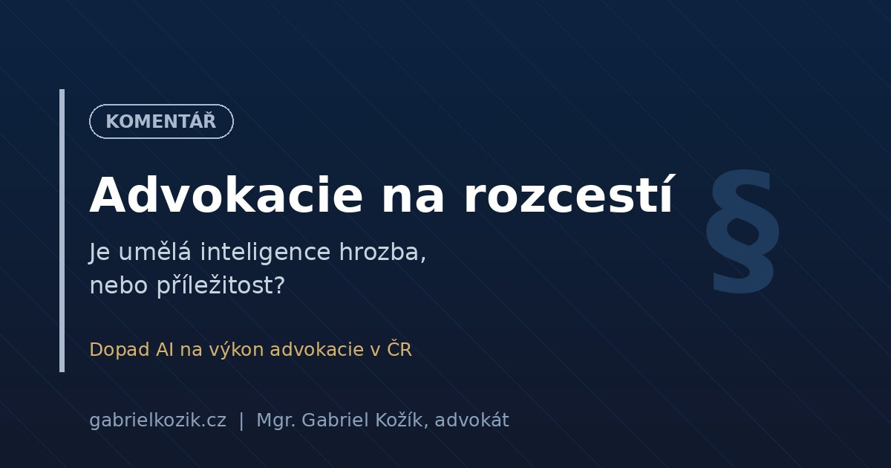

Umělá inteligence (AI) již není jen tématem sci-fi filmů, ale stává se realitou každodenní právní praxe. Od automatizace rutinních úkonů po složité analýzy smluv – AI mění způsob, jakým advokáti pracují. Jaké příležitosti a rizika tento trend přináší pro české právníky?
Revoluce v efektivitě, nikoliv náhrada právníků
Často se setkávám s obavou, že AI nahradí právníky. Můj názor je jasný: AI nenahradí právníky, ale právníci využívající AI nahradí ty, kteří ji ignorují. Nástroje jako ChatGPT, Gemini nebo specializované právní AI systémy dokážou během vteřin analyzovat tisíce stránek textu, vyhledávat judikaturu nebo připravovat první drafty smluv.
„Klíčem k úspěchu v moderní advokacii není soutěžit s AI v rychlosti zpracování dat, ale využít ji k tomu, abychom měli více času na strategické myšlení a péči o klienta.“
Kde AI pomáhá nejvíce?
- Rešerše a analýza: Rychlé vyhledávání relevantních zákonů a judikátů.
- Draftování dokumentů: Příprava jednoduchých smluv a podání.
- Due Diligence: Automatizovaná kontrola rizik ve smlouvách při akvizicích.
- Administrativa: Třídění e-mailů, plánování schůzek a fakturace.
Je však nutné mít na paměti, že výstupy AI je třeba vždy kriticky ověřovat. Odpovědnost za právní radu nese vždy advokát, nikoliv algoritmus.
Etika a bezpečnost dat
S nasazením AI vyvstávají nové otázky ohledně mlčenlivosti a ochrany dat klientů. Při používání veřejných modelů AI je třeba dbát na to, abychom do nich nevkládali citlivé údaje. Advokátní kanceláře by měly využívat zabezpečená řešení (Enterprise verze), která garantují, že data nebudou použita k trénování modelů.